library(bixverse)
library(ggplot2)
library(data.table)
#>
#> Attaching package: 'data.table'
#> The following object is masked from 'package:base':
#>
#> %notin%
library(bixverse.plots)
library(magrittr)A guide to single-cell plotting functions
2026-06-29
Intro
This vignette gives an overview of the different plotting functions that are available when running a single cell analysis.
Preparing the data
We run the standard analysis using the same PBMC3k data set. For more details on the data analysis itself, please refer to the introductory vignette. This vignette assumes familiarity with how the SingleCells class, on-disk storage and cells-to-keep logic work.
Code
pbmc3k_path <- download_pbmc3k()
tempdir_pbmc <- tempdir()
sc_object <- SingleCells(dir_data = tempdir_pbmc)
mtx_io_params <- get_cell_ranger_params(pbmc3k_path)
sc_object <- load_mtx(
object = sc_object,
sc_mtx_io_param = mtx_io_params,
mtx_streaming = FALSE,
.verbose = TRUE
)
#> Using light streaming for the CSR to CSC conversion.
#> Loading observations data from flat file into the DuckDB.
#> Loading variable data from flat file into the DuckDB.
sc_object[["sample"]] <- sample(
x = c("sample1", "sample2"),
size = nrow(sc_object),
replace = TRUE
)
setnames_sc(
object = sc_object,
table = "var",
old = "column1",
new = "gene_symbol"
)
var <- get_sc_var(sc_object)
ensembl_to_symbol <- setNames(var$gene_symbol, var$gene_id)
symbol_to_ensembl <- setNames(var$gene_id, var$gene_symbol)
# Define gene sets whose proportional expression signals low quality
gs_of_interest <- list(
MT = var[grepl("^MT-", gene_symbol), gene_id],
Ribo = var[grepl("^RPS|^RPL", gene_symbol), gene_id]
)
sc_object <- gene_set_proportions_sc(
sc_object,
gs_of_interest,
streaming = FALSE,
.verbose = TRUE
)
# Collect metrics for outlier detection
qc_df <- sc_object[[c("cell_id", "sample", "lib_size", "nnz", "MT")]]
metrics <- list(
log10_lib_size = log10(qc_df$lib_size),
log10_nnz = log10(qc_df$nnz),
MT = qc_df$MT
)
directions <- c(
log10_lib_size = "twosided",
log10_nnz = "twosided",
MT = "above"
)
qc <- run_cell_qc(
metrics = metrics,
cells_to_keep = get_cells_to_keep(sc_object),
directions = directions,
threshold = 3,
groups = qc_df$sample
)Joint QC plot
joint_plot_sc() compares the number of features and number of counts per cell similar to sns.jointplot.
joint_plot_sc(qc)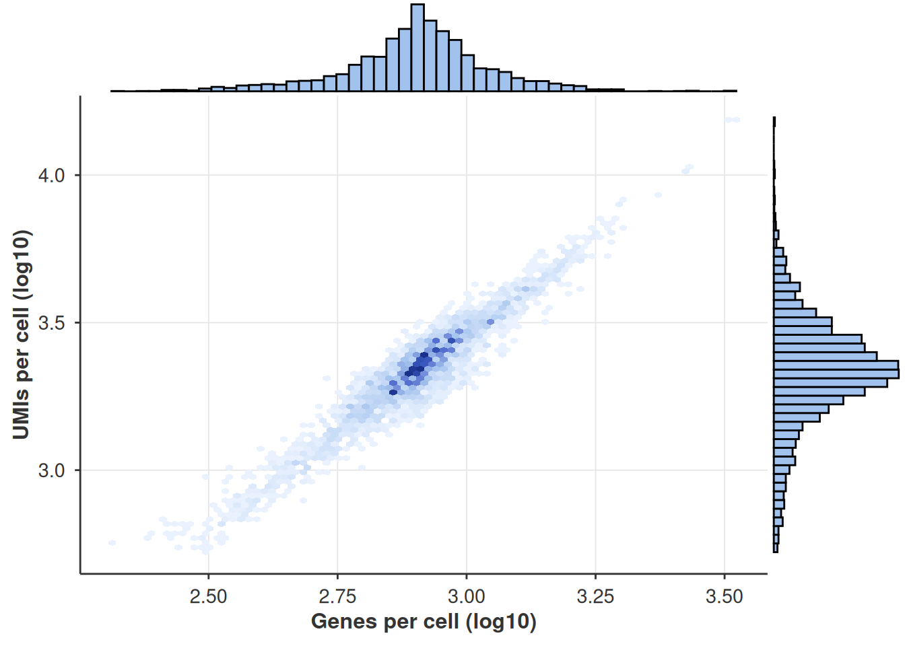
Violin QC Plots
violin_plot_sc() shows the distribution of each QC metric as a violin, split by donor (or any grouping variable stored in the qc object).
violin_plot_sc(qc)
#> $log10_lib_size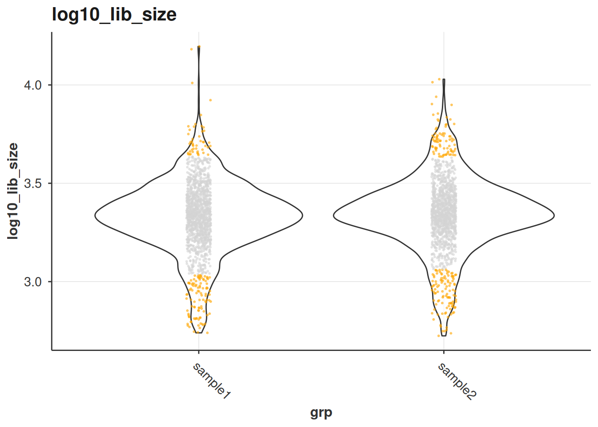
#>
#> $log10_nnz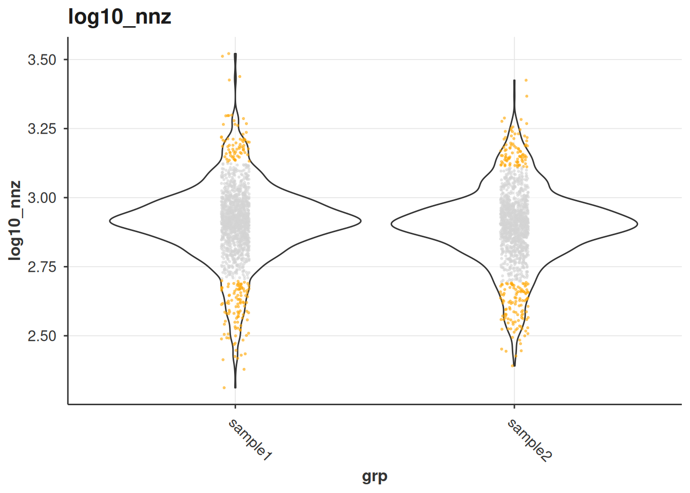
#>
#> $MT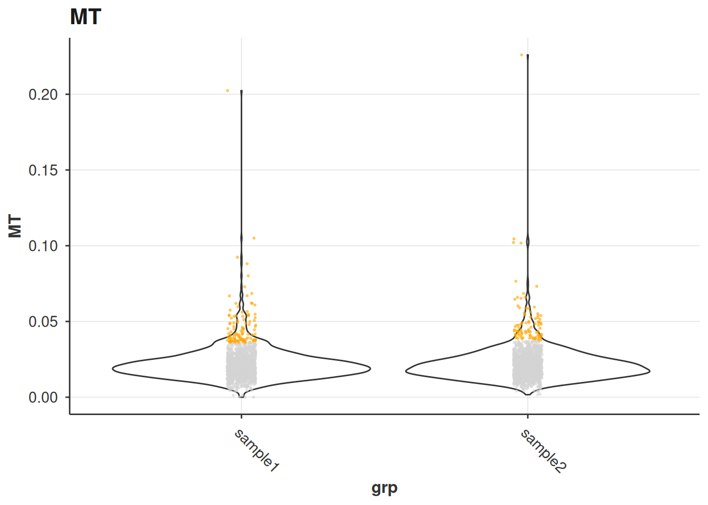
Alternatively, we can also provide a datatable generate the violins plots with different variables than those considered in the QC.
obs <- get_sc_obs(sc_object)
violin_plot_sc(
obs,
grouping_column = "sample",
variable = "Ribo",
show_outlier = TRUE
)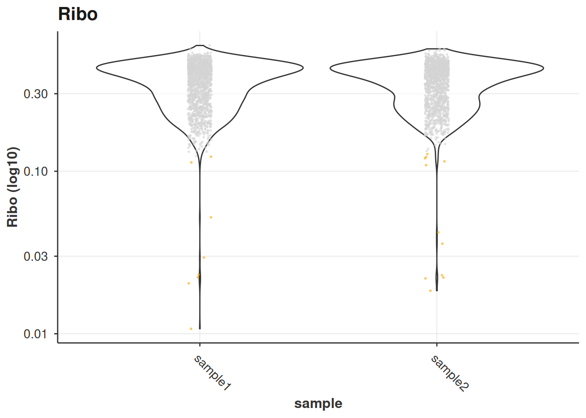
Density QC Plots
density_plot_sc() overlays smoothed density distributions for each group, which highlights bimodal distributions or outlier populations that violins can obscure.
density_plot_sc(qc)
#> $log10_lib_size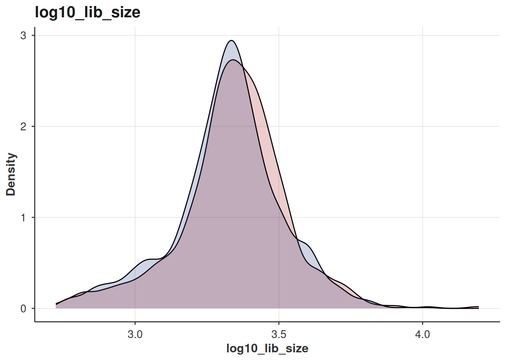
#>
#> $log10_nnz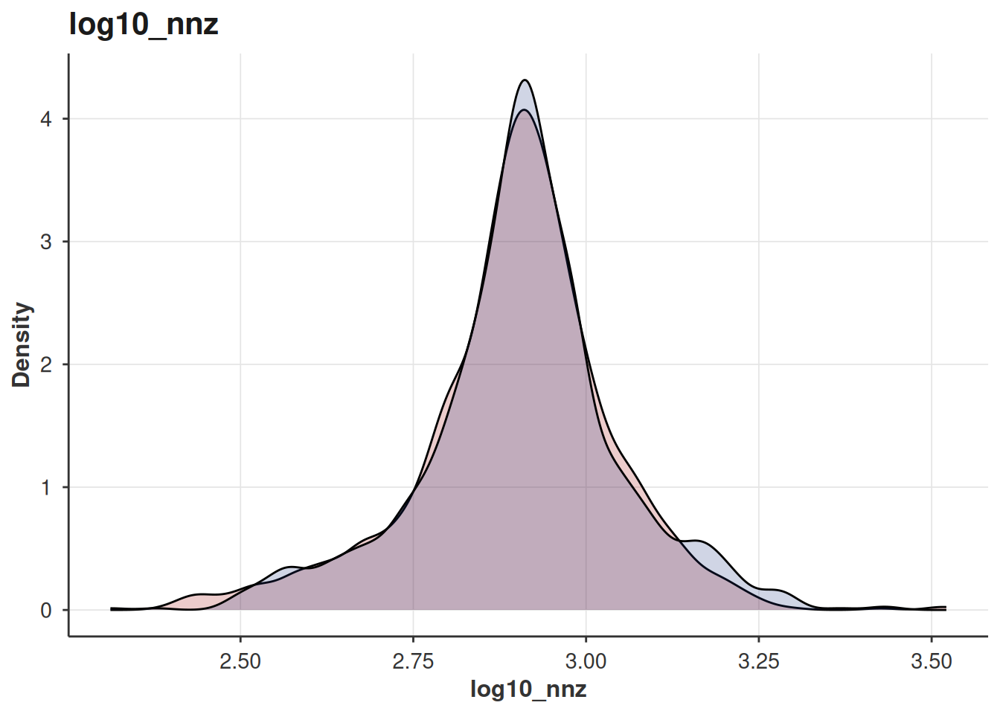
#>
#> $MT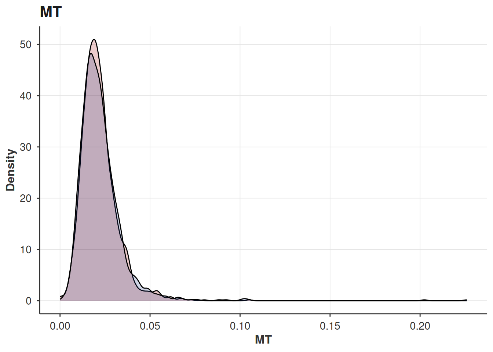
Dimensionality Reduction Plots
After PCA, neighbour-finding, clustering, and UMAP, cells can be visualised on any 2D embedding stored in the object.
Code
sc_object <- find_hvg_sc(
object = sc_object,
hvg_no = 2000L,
.verbose = TRUE
)
sc_object <- calculate_pca_sc(
object = sc_object,
no_pcs = 30L,
sparse_svd = TRUE
)
#> Using sparse SVD solving on scaled data on 2000 HVG.
# the data is so tiny that exhaustive kNN search is faster than building
# an approximate nearest neighbour index
sc_object <- find_neighbours_sc(
object = sc_object,
neighbours_params = params_sc_neighbours(
knn = list(knn_method = "exhaustive")
)
)
#>
#> Generating sNN graph (full: TRUE).
#> Transforming sNN data to igraph.
sc_object <- find_clusters_sc(sc_object, res = 0.5, name = "leiden_clusters")
sc_object <- umap_sc(sc_object)
#> Running UMAP.
#> Using n_epochs = 500 (dataset <10k samples or adam_parallel optimiser)
#> Using provided kNN graph.
cell_markers <- c(
CD3D = "T cells",
CD3E = "T cells",
CD3G = "T cells",
IL7R = "CD4+ T",
CD4 = "CD4+ T",
CD8A = "CD8+ T",
CD8B = "CD8+ T",
MS4A1 = "B cells",
CD79A = "B cells",
CD19 = "B cells",
CD14 = "CD14+ Mono",
LYZ = "CD14+ Mono",
S100A8 = "CD14+ Mono",
FCGR3A = "CD16+ Mono",
CDKN1C = "CD16+ Mono",
GNLY = "NK",
NKG7 = "NK",
NCAM1 = "NK",
FCER1A = "mDC",
CD1C = "mDC",
LILRA4 = "pDC",
CLEC4C = "pDC",
PPBP = "Platelet",
PF4 = "Platelet"
)
cell_markers_dt <- stack(cell_markers) %>%
as.data.table() %>%
setnames(., c("values", "ind"), c("cell_type", "gene_symbol")) %>%
.[, gene_symbol := as.character(gene_symbol)] %>%
.[, gene_id := var$gene_id[match(gene_symbol, var$gene_symbol)]] %>%
.[!is.na(gene_id), ]
## Prepare the list of markers
marker_list <- prepare_cell_markers(sc_object, cell_markers_dt)
## Calculate the score for each cell
sctype_scores <- calc_sc_type_scores(
object = sc_object,
cell_marker_list = marker_list
)
## Annotate the clusters
cell_type_anno <- score_clusters(
sctype_scores,
sc_object[[]][["leiden_clusters"]]
)
obs <- sc_object[[]][, .(cell_idx, leiden_clusters)]
add_sctype <- setNames(
cell_type_anno$cell_type[match(
obs$leiden_clusters,
cell_type_anno$cluster_id
)],
nm = obs$cell_idx
)
sc_object[["sc_type"]] <- add_sctypeColouring by Cluster
We can plot the UMAP embedding highlighting the leiden clusters.
embedding_plot_sc(
sc_object,
embedding = "umap",
colour_by = "leiden_clusters",
label_by = "leiden_clusters",
discrete = TRUE
)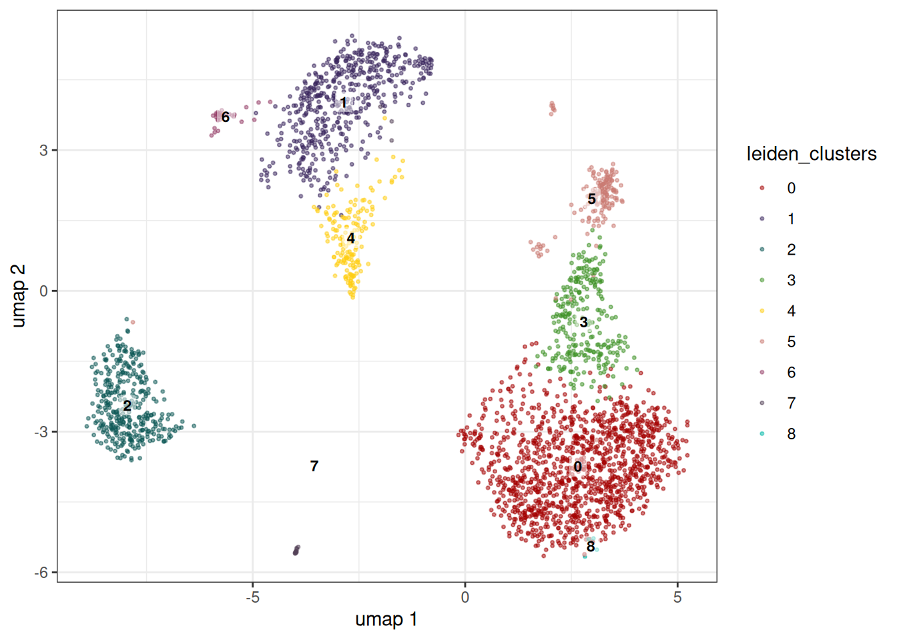
Colouring by a discrete variable
Pass any column from the cell metadata to colour_by. Use label_by to overlay text labels at the cluster centroid. These do not need to be the same variables.
embedding_plot_sc(
sc_object,
embedding = "umap",
colour_by = "sc_type",
label_by = "leiden_clusters",
discrete = TRUE
)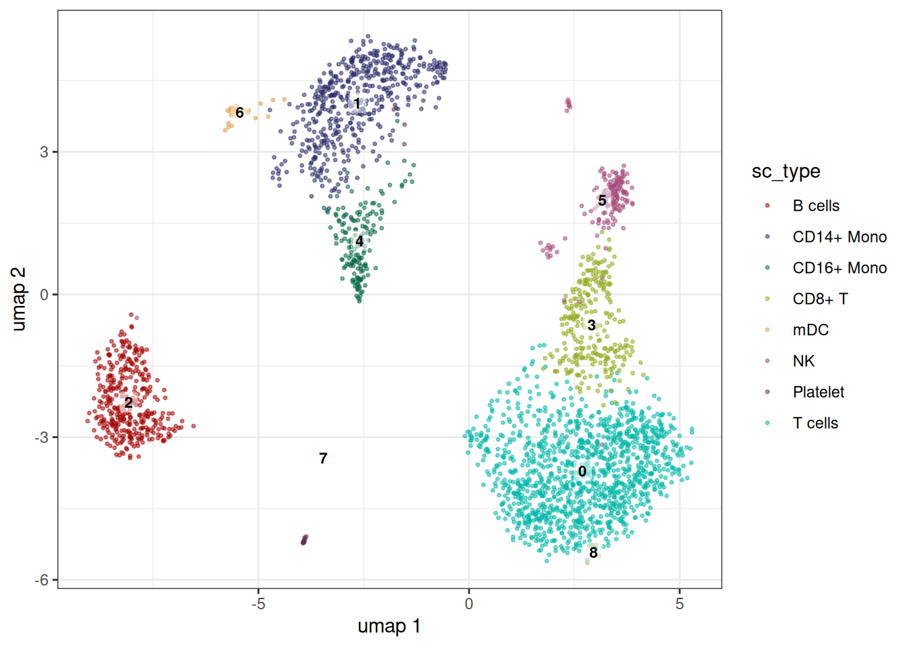
Colouring by a continuous variable
Set discrete = FALSE to use a continuous colour scale — useful for confidence scores, pseudotime, or gene module scores.
embedding_plot_sc(
sc_object,
embedding = "umap",
colour_by = "Ribo",
discrete = FALSE,
point_alpha = 0.2
)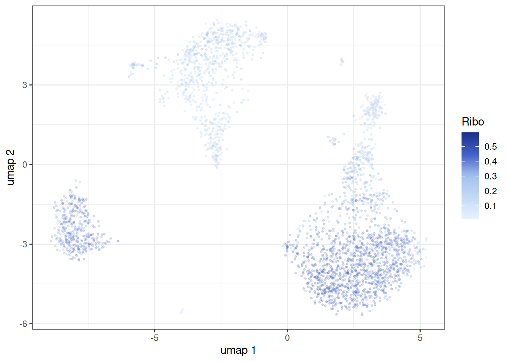
Key arguments:
| Argument | Description |
|---|---|
embedding |
Name of the stored embedding ("umap", "tsne", "pca…) |
colour_by |
Metadata column used to colour points |
label_by |
Metadata column used to label centroids |
discrete |
TRUE for categorical palettes, FALSE for continuous |
point_alpha |
Transparency (0–1); reduce for dense datasets |
Extracting the plotting data
Alternatively, you can also extract the plotting data directly to make customised plots.
dt <- extract_embedding_data(
sc_object,
embedding = "umap",
obs_cols = c("sc_type", "leiden_clusters", "Ribo")
)
head(dt)
#> cell_id dim_1 dim_2 sc_type leiden_clusters Ribo
#> <char> <num> <num> <char> <int> <num>
#> 1: AAACATACAACCAC-1 -3.065040 2.836846 T cells 0 0.4371381
#> 2: AAACATTGAGCTAC-1 7.031731 3.238600 B cells 2 0.4246323
#> 3: AAACATTGATCAGC-1 -5.193488 3.597048 T cells 0 0.3171120
#> 4: AAACCGTGCTTCCG-1 2.995419 -2.571416 CD16+ Mono 4 0.2431611
#> 5: AAACCGTGTATGCG-1 -4.418792 -1.044617 NK 5 0.1491318
#> 6: AAACGCACTGGTAC-1 -3.353616 3.028350 T cells 0 0.3635097Per-Gene Expression plots`
feature_plot_sc() projects normalised expression of one or more genes onto the embedding.
# Select a single feature by Ensembl ID; provide a human-readable label
features <- setdiff(symbol_to_ensembl[names(cell_markers)], NA)
feature_labels <- ensembl_to_symbol[features]
feature_plot_sc(
object = sc_object,
features = features[8],
feature_labels = feature_labels[8],
embedding = "umap",
label_by = "sc_type"
)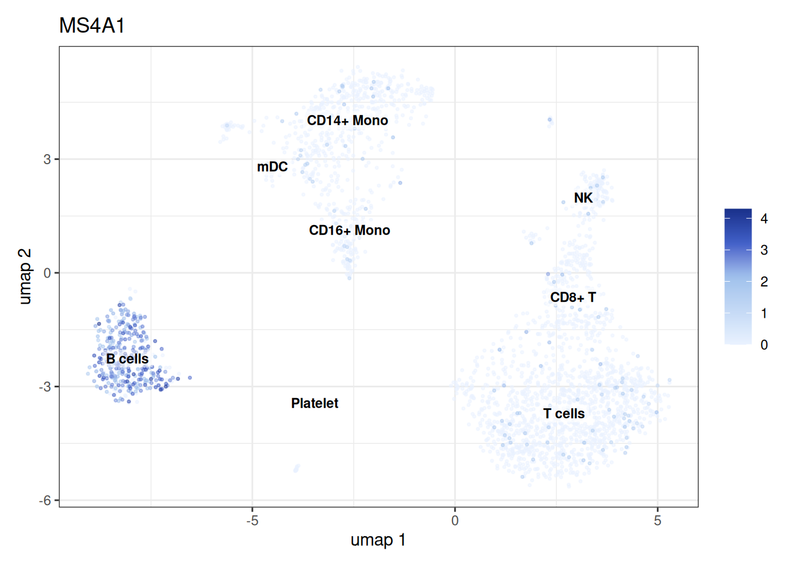
Tip: pass a character vector of Ensembl IDs to features and matching labels to feature_labels to produce one panel per gene.
We can also highlight the genes of interest for clearer visualisation.
# Select a single feature by Ensembl ID; provide a human-readable label
features <- setdiff(symbol_to_ensembl[names(cell_markers)], NA)
feature_labels <- ensembl_to_symbol[features]
feature_plot_sc(
object = sc_object,
features = features[8],
feature_labels = feature_labels[8],
embedding = "umap",
label_by = "sc_type",
highlight_features = TRUE
)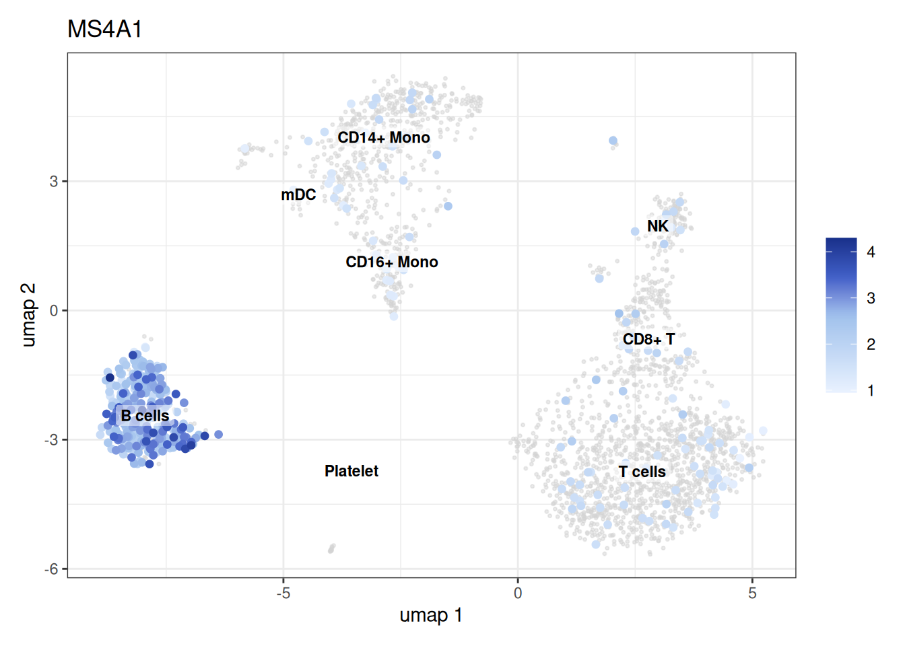
Extracting the plotting data
Alternatively, you can also extract the plotting data directly to make customised plots.
dt <- extract_feature_plot_data(
sc_object,
embedding = "umap",
obs_cols = c("sc_type", "leiden_clusters", "Ribo"),
features = features[8],
modality = "rna"
)
head(dt)
#> cell_id dim_1 dim_2 sc_type leiden_clusters Ribo
#> <char> <num> <num> <char> <int> <num>
#> 1: AAACATACAACCAC-1 -3.065040 2.836846 T cells 0 0.4371381
#> 2: AAACATTGAGCTAC-1 7.031731 3.238600 B cells 2 0.4246323
#> 3: AAACATTGATCAGC-1 -5.193488 3.597048 T cells 0 0.3171120
#> 4: AAACCGTGCTTCCG-1 2.995419 -2.571416 CD16+ Mono 4 0.2431611
#> 5: AAACCGTGTATGCG-1 -4.418792 -1.044617 NK 5 0.1491318
#> 6: AAACGCACTGGTAC-1 -3.353616 3.028350 T cells 0 0.3635097
#> gene expression
#> <fctr> <num>
#> 1: ENSG00000156738 0.000000
#> 2: ENSG00000156738 2.583984
#> 3: ENSG00000156738 0.000000
#> 4: ENSG00000156738 0.000000
#> 5: ENSG00000156738 0.000000
#> 6: ENSG00000156738 0.000000Dot Plots
Dot plots encode two dimensions simultaneously:
- Dot size → fraction of cells in the group expressing the gene (≥ 1 count)
- Dot colour → mean (scaled) expression among expressing cells
dot_plot_sc(
object = sc_object,
features = features,
feature_labels = ensembl_to_symbol[features],
grouping_variable = "leiden_clusters",
scale_exp = TRUE,
feature_grouping = cell_markers,
cluster_groups = TRUE
)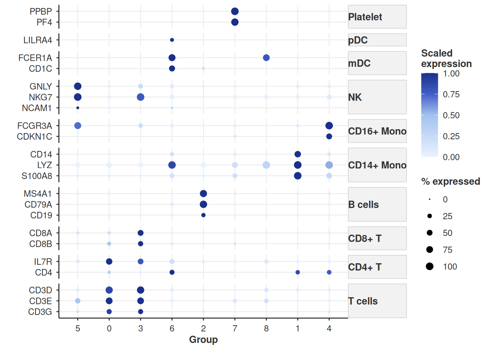
Key arguments:
| Argument | Description |
|---|---|
features |
Ensembl IDs to plot |
feature_labels |
Display names shown on the axis |
grouping_variable |
Cell metadata column defining rows |
scale_exp |
Scale expression per gene (z-score) |
feature_grouping |
Named vector mapping gene → group label for x-axis brackets |
cluster_groups |
Hierarchically cluster rows by expression profile |
Extracting the plotting data
Alternatively, you can also extract the plotting data directly to make customised plots.
dt <- extract_dot_plot_data(
sc_object,
features = features,
grouping_variable = "leiden_clusters",
modality = "rna"
)
head(dt)
#> gene group mean_exp pct_exp scaled_exp
#> <fctr> <fctr> <num> <num> <num>
#> 1: ENSG00000167286 0 2.12428379 87.207359 0.94420867
#> 2: ENSG00000167286 1 0.16426496 9.756097 0.07301303
#> 3: ENSG00000167286 2 0.09634478 5.187320 0.04282365
#> 4: ENSG00000167286 3 2.24980330 85.389608 1.00000000
#> 5: ENSG00000167286 4 0.10693659 7.361963 0.04753153
#> 6: ENSG00000167286 5 0.22914907 10.810811 0.10185294Stacked Violin Plots
Stacked violins show the per-group expression distribution of several genes in a compact vertical layout.
# Take the first five markers
idx <- 1:5
stacked_violin_plot_sc(
sc_object,
features = names(feature_labels)[idx],
feature_labels = feature_labels[idx],
grouping_variable = "sc_type",
)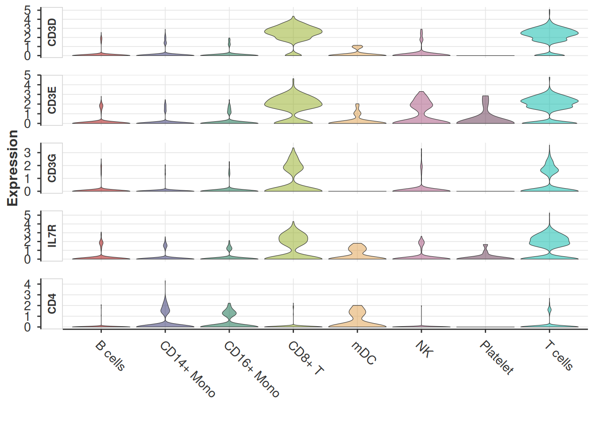
Extracting the plotting data
dt <- extract_gene_violin_data(
sc_object,
features = features,
grouping_variable = "sc_type",
modality = "rna"
)
head(dt)
#> cell_id group gene expression
#> <char> <fctr> <fctr> <num>
#> 1: AAACATACAACCAC-1 T cells ENSG00000167286 2.865234
#> 2: AAACATTGAGCTAC-1 B cells ENSG00000167286 0.000000
#> 3: AAACATTGATCAGC-1 T cells ENSG00000167286 3.490234
#> 4: AAACCGTGCTTCCG-1 CD16+ Mono ENSG00000167286 0.000000
#> 5: AAACCGTGTATGCG-1 NK ENSG00000167286 0.000000
#> 6: AAACGCACTGGTAC-1 T cells ENSG00000167286 1.730469